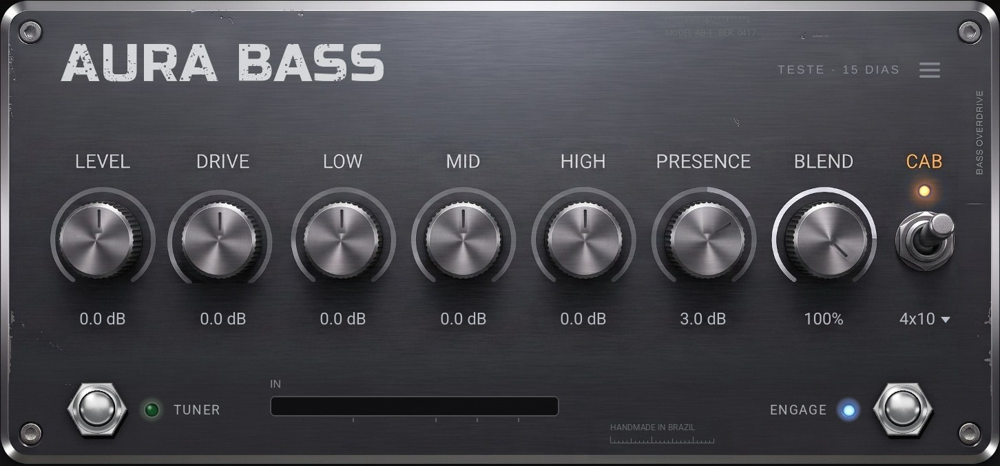

Afinador na mesma tela.
Toque o footswitch TUNER: a saída fica muda e o painel vira um afinador grande, legível de longe, com a nota e os cents.

AURA Bass
Overdrive, equalização e caixa de verdade para o seu contrabaixo. No Windows e no Mac, como plugin ou como programa.
Teste grátis por 15 dias, sem cartão. Uma licença vale para 3 aparelhos seus.

O caminho limpo e o caminho distorcido andam juntos, alinhados na mesma amostra. O Blend decide quanto de cada um você ouve — e o fundo do seu som continua inteiro.
Level, Drive, Low, Mid, High, Presence e Blend. Tudo à vista, do jeito que se mexe no palco: olhando e girando.
Feito para o palco e para a gravação, sem curva de aprendizado.
Saturação assimétrica com 4× de oversampling, somada ao sinal limpo sem atraso nem cancelamento de fase. Dá para sujar muito sem perder o corpo.
Grave, médio e agudo com as frequências certas para contrabaixo, mais um controle de presença para o ataque aparecer na mistura.
Simulação por resposta de impulso, com 4×10 e 1×15 à escolha. Pode desligar com um toque quando a sua DAW já tiver a dela.
Um footswitch transforma o painel em afinador e silencia a saída. Afina entre uma música e outra sem tirar o baixo do cabo.
Veja o sinal que está chegando e acerte o ganho de entrada arrastando no próprio medidor. Baixo passivo e ativo ficam no mesmo nível.
Liga e desliga só o drive, mantendo a equalização. Para tocar limpo e sujar na hora certa.
Toque o footswitch TUNER: a saída fica muda e o painel vira um afinador grande, legível de longe, com a nota e os cents.
Do download ao primeiro som em poucos minutos.
Sem internet, o AURA continua funcionando por até 30 dias entre as confirmações da licença.

Todos os recursos liberados. Sem cartão.
Licença completa: em breve. Garantia de 7 dias após a compra.
Se o Windows ou o Mac avisar que o instalador é de um desenvolvedor desconhecido, confirme que o arquivo veio desta página. Windows: “Mais informações” → “Executar assim mesmo”. Mac: botão direito no instalador → “Abrir”.
Sim. Como VST3 no Windows e no Mac, e como Audio Unit no Mac — o que cobre Reaper, Cubase, Studio One, Ableton, Logic e GarageBand. Também há o programa autônomo, para tocar sem abrir nenhuma DAW.
Para tocar o baixo, sim: é por ela que o instrumento entra no computador. No programa autônomo você escolhe a interface na própria tela do AURA.
Sim. Cada chave vale para até 3 aparelhos seus. Para mudar de aparelho, desative um deles dentro do AURA e ative no novo.
O AURA pede a chave de ativação e para de processar o som até ser ativado. Nada do que você salvou se perde.
Só para ativar e confirmar a licença de tempos em tempos. Depois disso o AURA funciona offline por até 30 dias entre as confirmações.
Pode, sem pagar nada além da licença e sem precisar dar crédito. O som que você faz é seu.
Você tem 7 dias de garantia: reembolso integral e a licença é desativada.